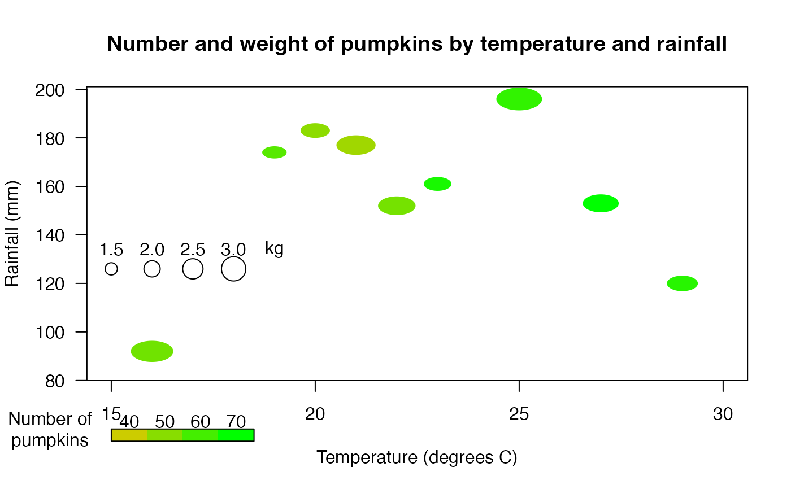
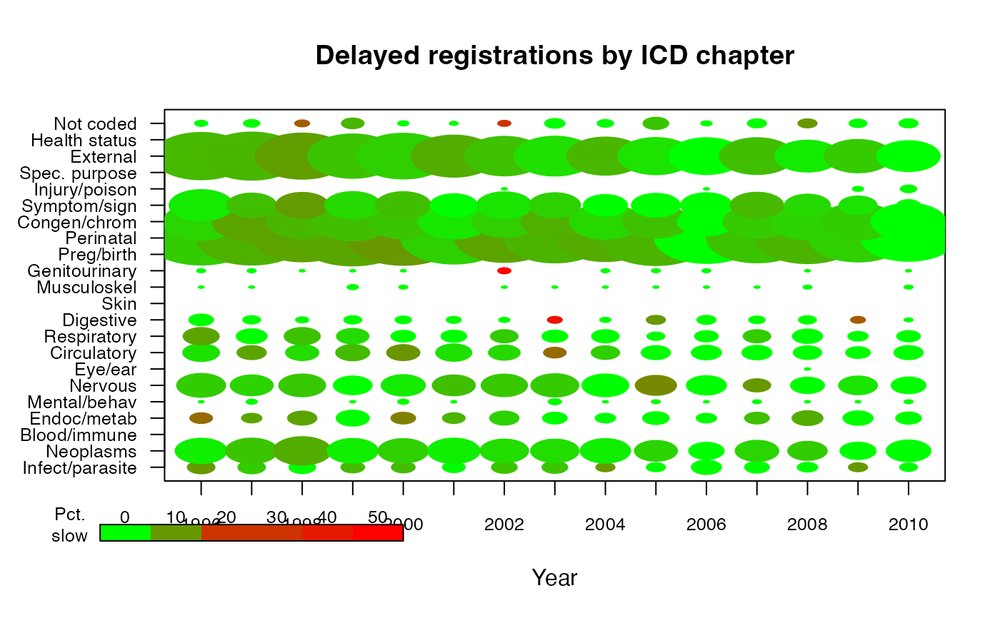

Display circles with specified size and color
size_n_color.RdDisplay a plot of circles at specified locations, each with a specified size and color.
Usage
size_n_color(x=NULL,y,size,sizefun="sqrt",col,main="",
xlim=NA,xlab="",xat=NULL,xaxlab=NULL,xcex=1,xlas=0,xgrid=FALSE,
ylim=NA,ylab="",yat=NULL,yaxlab=NULL,ycex=1,ylas=1,ygrid=TRUE,
mar=c(5,4,4,2),boxit=TRUE,add=FALSE,...)Arguments
- x,y
Vectors or matrices of x and y positions for the symbols.
- size
Sizes for the symbols expressed as numbers.
- sizefun
The function to use for transforming the values to radii of circles. Square root gives areas proportional to the values.
- col
Colors for the symbols (see Details).
- main
Title for the plot.
- xlim,ylim
Explicit x and y limits for the plot
.
- xlab,ylab
Labels for the x and y axes.
- xat,yat
Where to place the ticks and tick labels on the axes.
- xaxlab,yaxlab
Tick labels for the x and y axes.
- xcex,ycex
Character expansions for the axis tick labels.
- xlas,ylas
Orientation for the axis tick labels (see par).
- xgrid,ygrid
Whether to display a grid along the x or y direction.
- mar
Margins for the plot (see Details).
- boxit
Whether to draw a box around the plot.
- add
Whether to draw a new plot (FALSE) or add symbols to an existing plot (TRUE).
- ...
Additional arguments passed to plot.
Details
size_n_color plots circles centered on the x and y coordinates. The size and color of the circles may also be specified individually, allowing four dimensions of variation to be displayed on the plot.
size_n_color may also be used to display a "visual table" as in the second example. Here the x and y coordinates are used to associate the symbols with two categorical variables, underlying cause of death and year of observation. If the x values are not passed to the function, it will try to space out the circles evenly in a representation of the matrix. If the matrix is not square, use a plotting device that has about the same proportion of height and width as the matrix.
Examples
meantemp<-c(19,22,25,29,21,20,16,27,23,26)
totalrain<-c(174,152,196,120,177,183,92,153,161,85)
numpumpkin<-c(53,47,61,63,38,42,48,71,66,29)
meanwt<-c(1.5,2.3,2.8,1.9,2.4,1.8,2.6,2.2,1.7)
size_n_color(meantemp,totalrain,meanwt/5,NA,xlim=c(15,30),
color.scale(numpumpkin,c(0.8,0),c(0.8,1),0),
xlab="Temperature (degrees C)",ylab="Rainfall (mm)",
main="Number and weight of pumpkins by temperature and rainfall",
xat=seq(15,30,by=5),yat=seq(80,200,by=20))
color.legend(15,55,18.5,60,seq(40,70,by=10),
rect.col=color.scale(seq(40,70,by=10),c(0.8,0),c(0.8,1),0))
points(15:18,rep(126,4),cex=seq(1.5,3.0,by=0.5))
text(15:19,rep(134,5),c("1.5","2.0","2.5","3.0","kg"))
par(xpd=TRUE)
text(13.5,60,"Number of\npumpkins")

par(xpd=FALSE)
# now display a "visual table" of delayed registrations by underlying cause of
# death and year of observation. The sizes of the circles represent the log of
# the number of deaths and the colors represent the percentage of deaths that
# occurred in the year prior to registration or earlier
data(death_reg)
size_n_color(x=matrix(rep(1996:2010,each=22),nrow=22),
y=matrix(rep(1:22,15),nrow=22),size=t(death_reg[[1]])/200,
col=color.scale(t(death_reg[[2]]),c(0,0.8,1),c(1,0.2,0),0),
ylim=c(1,22),main="Delayed registrations by ICD chapter",
xlab="Year",xaxlab=1996:2010,xat=1996:2010,xcex=0.8,
yaxlab=colnames(death_reg[[1]]),ycex=0.8,ygrid=TRUE,mar=c(5,6,4,2))
color.legend(1994,-3.5,2000,-2.5,seq(0,50,by=10),cex=0.8,
rect.col=color.scale(seq(0,50,by=10),c(0,0.8,1),c(1,0.2,0),0))
par(xpd=TRUE)
text(1993.4,-2.5,"Pct.\nslow",cex=0.8)

par(xpd=FALSE)